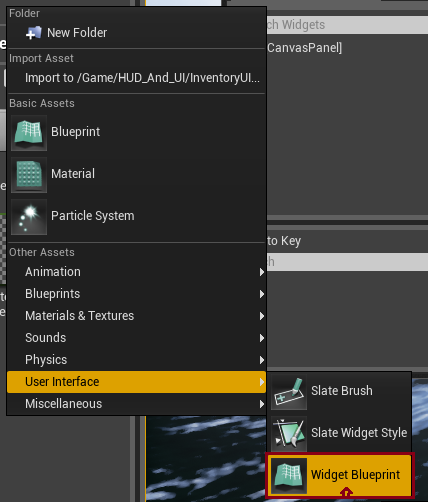
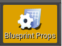
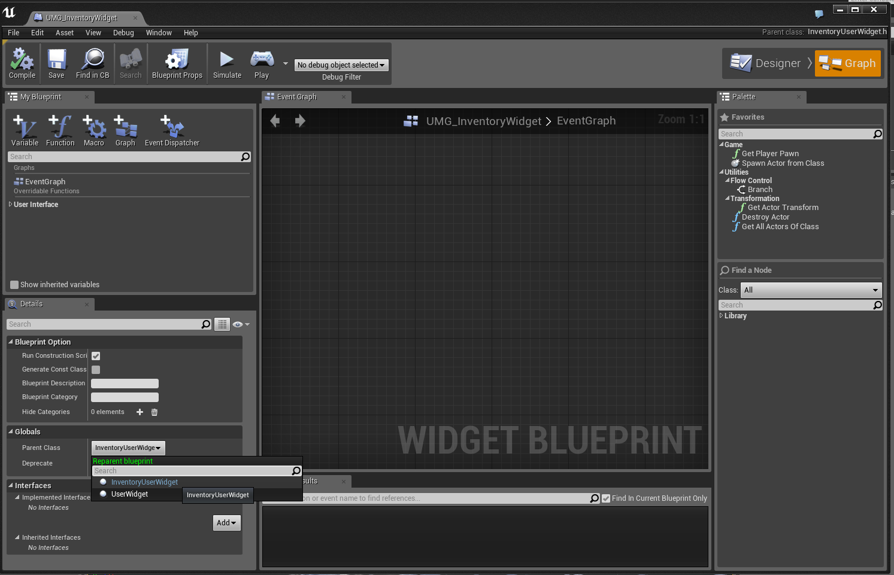

UMG, How to extend a UUserWidget:: for UMG in C++.
Contents
Overview
Author: ( )
A updated version of this tutorial can be found here.
Extend UserWidget for UMG Widgets
I wanted to extend the Widget Blueprint, i got some great help from Nick Darnell so thanks again.
In order to derive my class from UUserWidget:: i did the following.
Add Header Files To Project
You add several headers to your project header. "(YourProjectName.h)".
#include "Runtime/UMG/Public/UMG.h"
#include "Runtime/UMG/Public/UMGStyle.h"
#include "Runtime/UMG/Public/Slate/SObjectWidget.h"
#include "Runtime/UMG/Public/IUMGModule.h"
#include "Runtime/UMG/Public/Blueprint/UserWidget.h"
Adding Modules
And then i also made sure that the UMG and Slate Modules was included as well. In "(YourProjectName.Build.cs)":
PublicDependencyModuleNames.AddRange(new string[] { "Core", "CoreUObject", "Engine", "InputCore", "UMG", "Slate", "SlateCore"})
Compile
Compile and re-open the editor. And add a new class to the project derived from UUserWidget::
If you were wondering how the header of the derived class looks like after created/ added from the editor.
#pragma once
#include "Blueprint/UserWidget.h"
#include "InventoryWidget.generated.h"
/**
*
*/
UCLASS()
class MYGAME_API UInventoryWidget : public UUserWidget
{
GENERATED_UCLASS_BODY()
};
Using the new User Widget class
Create a new Widget Blueprint as shown in the image. 
Set the Widget Parent
Open up the new Widget you just created and go to the Graph of the Widget Blueprint. Press on the  button on the top of the window.
Go down to the details
Under the Category "Globals" you set the class you derived from UUserWidget. 
Conclusion
You are done, now you have a simple and fast way to extend the user widget. From everything from Data Storage to picking up "events" delegates and so on.
Hope this was helpfull.
WCode
Related Tutorials
[Updated Tutorial] Extend UserWidget for UMG Widgets by WCode.
[Tutorial/ Snippet] Creating a UMG Widget in C++, and delegate example by WCode.